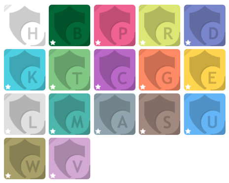

DESCCO
Desenvolvimento Estratégico e Criativo da Comunicação
Composto por 5 blogs e 17 segmentos de projetos
Criado por Hemerson Vianna / @hemersonvianna
O Projeto
A DESCCO, foi criada em 2011, mas sem uma ideia consolidada sobre o rumo que iria seguir. Agora em 2016, ela segue um rumo mais definido. Partindo do príncipio da paixão pelo aprendizado, a necessidade de seus registros estarem disponíveis para futuras consultas e aberto para contribuições. O projeto se dividiu em 17 organizações que ajudasse tanto com recursos, quanto na exemplificação de aprendizagem e contribuição. O objetivo principal é consolidar o conhecimento e com a ideia do Open Source, ter a contribuição e ajudar quem estiver no mesmo caminho. Ela também conta com 5 blogs, cujo o autor é o idealizador do projeto
Os segmentos dos projetos
- Headquartes
- Brazilian Dev
- Prime
- Resource
- Documentation
- Knowledge
- Test
- CRUD
- Game
- Experiment
- Language
- Math
- Algorithm
- System
- UML
- Workshop
- Viewpoint
Brazilian Dev

Todo desenvolvedor precisa ter um lugar onde possa guardar as preferências do seu editor de código e demais ferramentas ou configurações que utilize. Essa é a função da organização do desenvolvedor brasileiro. Ter repositórios onde eu possa guardar minhas configurações e estão a disposição para quem precise dos mesmos recursos.
Headquarters

É o centro de comando onde se encontra as configurações gerais para os projetos e os sites do grupo.
Prime

Algumas coisas são essenciais para um projeto, ou podemos dizer primordiais. Você está iniciando um projeto e precisa de uma metodologia de CSS, por exemplo. Para isso, você pode usar um projeto com a estrutura de pré-processadores que seguem a metodologia ITCSS. Esse é um dos projetos que você encontra nessa organização.
Resource

Recursos para os projetos. Nem sempre você precisa necessariamente de um framework, e sim, apenas de alguns recursos como um componente de paginação, tabs, modal e etc.. Nessa organização, encontrará vários recursos em diversas linguagens.
Documentation

Ter uma boa documentação é necessário para não se perder em meio a um projeto. Nessa organização estarão algumas documentações que serão de grande ajuda para organizar os projetos.
Knowledge

Ter um bom conhecimento de uma linguagem ou ferramenta é muito importante. Aqui poderemos ter diversos assuntos para a finalidade de estudo. Onde serão concetradas todas as informações de uma linguagem ou ferramenta. Por exemplo, no repositório sobre o GruntJS, você poderá encontrar vários exemplos práticos e muito conteúdo teórico sobre o assunto.
Test

Saber e escrever testes para o seu código é mais que necessário. Aqui você encontra muitos testes, em diversas linguagens com N ferramentas para testes.
CRUD

Que tal em um lugar só, você poder ter acesso a várias formas de "Create, Read, Update and Delete" e com N linguagens? Isso ajuda a ver o seu funcionamente em várias linguagens, frameworks e bibliotecas.
Game

Diversão? Também. Na área de desenvolvimento, também contamos com o desenvolvimento de jogos. Nessa organização teremos vários jogos com N linguagens e engines.
Experiment

Sempre é bom criar experimentos com novos recursos, que ainda não podem ser utilizados em produção. Aqui será o lugar certo para isso.
Language

Não se consegue nada sozinho. Principalmente na área de desenvolvimento é preciso se comunicar ou pesquisar em uma língua que não seja a sua nativa. Essa organização terá um bom conteúdo para o estudos de diversos idiomas.
Math

Criar sistemas e desenvolver jogos, não seria possível sem uma noção básica de matemática. Ter um lugar onde podemos ter várias funções matemáticas com N linguagens, parece ser uma ideia muito boa para o aprendizado ou consolidar na memória. Esse é o lugar certo.
Algorithm

Saber uma linguagem, mexer com uma ferramenta, não tem muita utilidade se não souber o que está fazendo. Portanto, aquela matéria da faculdade que muitos as vezes não entendem ou acham desnecessário, na verdade é primordial. Me diga o algoritmo para chupar uma bala. Consegue fazer de um sistema completo. Nessa organização terão muitos algoritmos para questões de estudo.
System

É útil termos uma organização, onde se tenha sistemas mais complexos que nos ajude no dia a dia, seja paa diversão ou estudo. Você que é amante de filmes e séries, não acharia interessante um sistema que te lembra dos lançamentos e datas de filmes e séries? Sistemas como esse, estarão aqui.
UML

Documentações, sistemas, exemplos e recursos, ajudam muito no desenvolvimento. Também precisamos ter os diagramas para a documentação e processo de desenvolvimento de um software. É mais que uma boa prática. Nessa organização teremos muitos diagramas para a finalizadade de estudo e compreenssão dos sistemas.
Workshop

Oficinas com o intuito de oferecer material para mni-cursos e troca de conhecimento.
Viewpoint

Não poderia faltar o segmento de apresentações que pode ser usado em palestras e afins.
Obrigado
No Github, você encontra todos esses segmentos e projetos, acesse: https://github.com/hemersonvianna
FIM
Achou que tinha acabado? Fora os projetos, você também pode conferir vários artigos no hemersonvianna.io